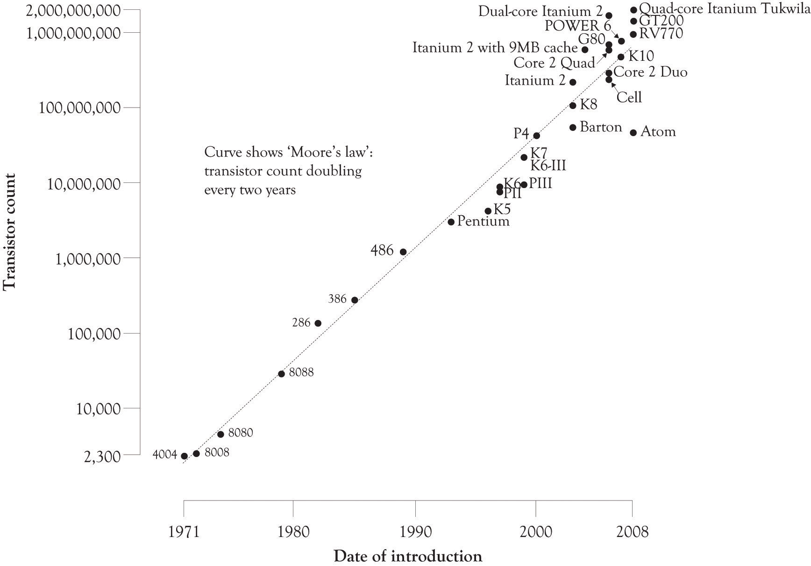
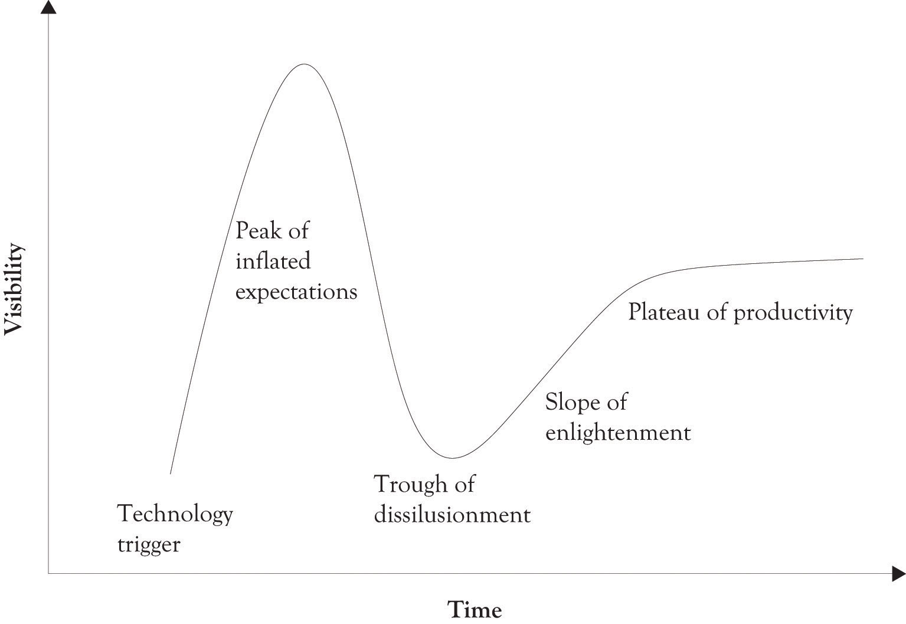

Some technologies and products fail very quickly because they are simply not effective. Others do not fail initially because of the hype surrounding the product. But they eventually flop because existing customers become disillusioned and communicate their dissatisfaction in a variety of informal and formal communication networks. There are also instances where a product is very useful, yet fails because of inadequate marketing and a problematic supply chain. In all of these instances, the traditional S-curve is not suitable for understanding and illustrating discontinuities in the diffusion and awareness of a new product or emerging technology.
Figure 1.4 Transistor Count and Moore's Law
A very popular approach to understanding growth and diffusion of technologies and products is Gartner’s Hype CycleAn adaptation of the technology life cycle that attempts to deal with discontinuities in adoption..Gartner (n.d.). It is an adaptation of the technology life cycle and attempts to deal with discontinuities in adoption. One of the more interesting features of Gartner’s Hype Cycle is that it takes into account the unbridled and almost euphoric optimism that accompanies the introduction of some technologies and, of course, the inevitable precipitous decline of the next-best thing (see Figure 1.5 "Gartner Hype Cycle"). The Hype Cycle consists of five phases: (1) the Technology Trigger, (2) the Peak of Inflated Expectations, (3) the Trough of Disillusionment, (4) the Slope of Enlightenment, and (5) the Plateau of Productivity.
Another approach to handling the very difficult cross-over between awareness of the technology and massive adoption was developed by Geoffrey Moore.Moore (1999). He uses a bell curve to model technology and adds a couple of cracks or discontinuities in the curve to illustrate the difficult diffusion issues that need to be dealt with when selling high-technology products. He notes that there is a large chasmA marked division, difference, or separation. that has to be crossed when a technology transitions from emerging and glitchy technology to productive, easy-to-use, and readily applicable to solving problems. The early adopters of an emerging technology are usually more willing to put up with the glitches than the masses. Technologies and products that are not capable of making the transition fade into the chasm.
Figure 1.5 Gartner Hype Cycle
